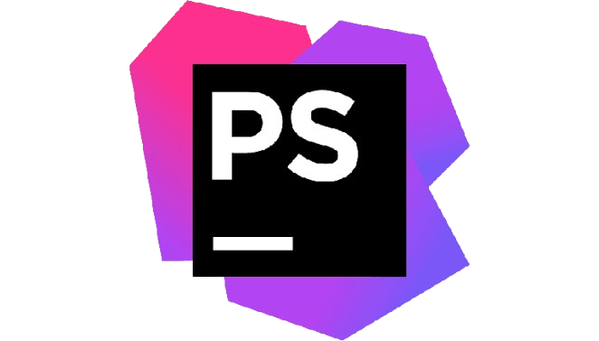
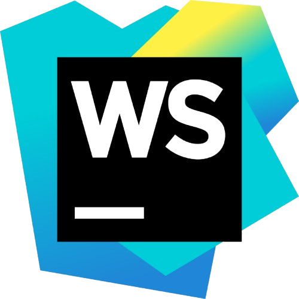
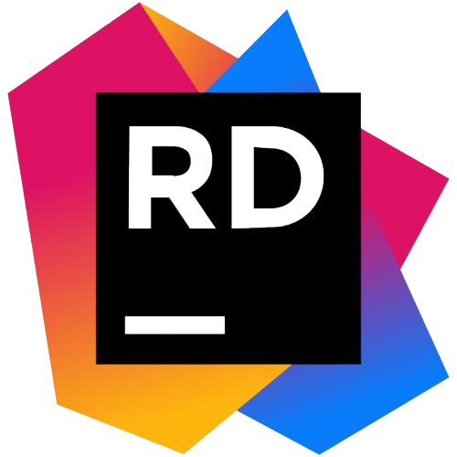
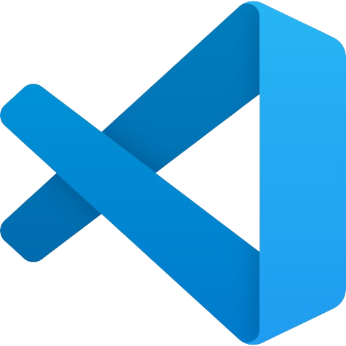
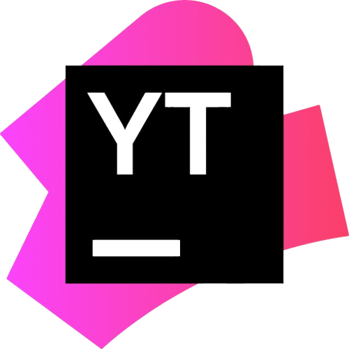

BETHOULE--VOISIN Joshua
Bienvenue sur mon portfolio ! Vous y trouverez mes compétences, mes réalisations et mes coordonnées !
Profil
📌 Présentation
Actuellement en deuxième année de BTS SIO (Services Informatiques aux Organisations) ,
Option SLAM (Solutions Logicielles et Applications Métiers) au Lycée Aliénor d'Aquitaine à Poitiers,
j’ai toujours été passionné par l’informatique et particulièrement par le développement d'applications / web.
Après l’obtention de mon BAC Professionnel RISC en 2023, c’est donc tout naturellement que j’ai poursuivi mon cursus dans cette voie.
🎯 Projet professionnel
Mon objectif est de devenir Développeur d’Applications Web .
Pour cela, après mon BTS SIO (Bac+2), je souhaite intégrer l'ENI École Informatique
pour poursuivre mes études et effectuer un BAC +3 Concepteur Développeur d'Applications
puis un BAC +5 Expert en Architecture et Développement Logiciel.
Je privilégie la formation en alternance , qui me permettra :
✅ D’acquérir une expérience professionnelle
✅ De mettre en pratique mes compétences en entreprise et autrement que sur des projets personnelles
✅ De me permettre d'investir pleinement mon temps sur ce qui me passionne.
✅ De mieux appréhender et comprendre les méthodes et outils utilisés en entreprise.
✅ D'augmenter mon employabilité en ayant déjà une expérience et des compétences à la fin de mes études.
Le domaine de l’informatique évolue sans cesse, et j’ai hâte de participer à des projets innovants en apportant mes compétences et ma passion pour le développement aux entreprises.
Parcours
Mon cursus scolaire, mes différentes formations et mon parcours professionnel.
Cursus scolaire 🏫
-
Accepté à l'ENI pour poursuivre mes études et effectuer un BAC +3
(En recherche d'Alternance)
(BAC+3) Concepteur Développeur d’Applications -
Entré au lycée Aliénor d'Aquitaine en BTS SIO (86000 Poitiers)
(BAC+2) BTS SIO option SLAM (Solutions Logicielles et Applications Métiers) -
Entré au lycée des métiers Maryse Bastié (87000 Limoges)
BAC professionnel SN option RISC (Réseaux Informatiques et Systèmes Communicants)
Parcours professionnel 🔨
-
En ce début d'année, j'ai eu la chance d'intégrer l'entreprise Broussaud Textile pour un stage de 5 semaines en développement web, où j’ai travaillé sur l'application interne de l'entreprise.
-
Début mai 2024, j'ai eu l'opportunité de retourner en stage chez LC-NETWORK, près de Limoges, où j'ai pu réaliser des tâches plus complexes et approfondir mes compétences.
-
Mon deuxième stage s'est déroulé dans une entreprise de réparation d'ordinateurs, similaire à Micro Rezo.
-
Mon premier stage de terminale a eu lieu dans une entreprise spécialisée dans le développement d'applications de caisses enregistreuses avec Symfony.
-
Mon second stage de première s'est déroulé dans une entreprise nommée "Micro Rezo", spécialisée dans la réparation matérielle et logicielle sur PC.
-
En raison de la pandémie de COVID-19, j'ai dû effectuer mon stage au lycée Maryse Bastié à Limoges, avec un focus sur les réseaux informatiques.
-
Lors de mon année de 3ᵉ, j'ai effectué mon tout premier stage de découverte en entreprise.
Stages
STAGE

🌟 Détails du Stage
Entreprise : ABC Tech, Limoges
Durée : 20 Janvier 2025 - 21 Février 2025
Mission : Développement d'un tableau de bord pour le suivi des projets.
🛠️ Compétences Acquises
Création d'interfaces utilisateur avec React.js.
Optimisation de requêtes SQL pour réduire les temps de réponse.
Travail en méthode agile avec des sprints hebdomadaires.
🎯 Projet Clé
Contexte : Création d'un outil de gestion des stocks.
Résultat : Réduction de 20% des erreurs de gestion grâce à une meilleure visibilité des données.
Impact : Amélioration de l'efficacité opérationnelle.
📣 Retour d'Encadrant
"Un stagiaire motivé et efficace, avec une excellente capacité d'adaptation."
🌟 Détails du Stage
Entreprise : ABC Tech, Limoges
Durée : 20 Janvier 2025 - 21 Février 2025
Mission : Développement d'un tableau de bord pour le suivi des projets.
🛠️ Compétences Acquises
Création d'interfaces utilisateur avec React.js.
Optimisation de requêtes SQL pour réduire les temps de réponse.
Travail en méthode agile avec des sprints hebdomadaires.
🎯 Projet Clé
Contexte : Création d'un outil de gestion des stocks.
Résultat : Réduction de 20% des erreurs de gestion grâce à une meilleure visibilité des données.
Impact : Amélioration de l'efficacité opérationnelle.
📣 Retour d'Encadrant
"Un stagiaire motivé et efficace, avec une excellente capacité d'adaptation."
Compétences
Mes compétences en développement 💻
J’ai acquis mes connaissances de plusieurs manières.
1️⃣ : Une bonne partie vient de mes études en BTS SIO, où j’ai appris les bases de l’informatique , du développement et de la gestion de projets.
2️⃣ : Par curiosité et envie de progresser, j’ai souvent pris l’initiative d’apprendre par moi-même.
J’ai expérimenté différentes technologies, essayé de mettre en place des solutions et cherché à comprendre comment les choses fonctionnent en pratique
Faire des tests, rencontrer des problèmes et trouver comment les résoudre, c’est ce qui m’a permis d’évoluer le plus rapidement.
3️⃣ : Chaque défi rencontré a été une occasion d’approfondir mes compétences et de développer une vraie capacité à chercher des solutions par moi-même.
Grâce à tout ça, j’ai appris à être autonome, à m’adapter aux nouvelles situations et à toujours vouloir aller plus loin dans ce que je fais
HTML
Le langage de balisage standard du web, utilisé pour structurer le contenu des pages et former la base de tout site internet.
CSS
CSS est le langage de style des sites web. Il permet de rendre une page attractive et interactive grâce aux animations et aux mises en page.
JavaScript
JavaScript est un langage de programmation dynamique qui rend les pages web interactives et réactives côté client.
PHP
PHP est un langage serveur utilisé pour générer des sites web dynamiques et gérer les bases de données.
Symfony
Symfony est un framework PHP puissant et trés complet permettant de structurer des applications web complexes.
SQL
SQL est le langage des bases de données relationnelles, utilisé pour stocker, interroger et gérer les informations.
C#
C# est un langage orienté objet développé par Microsoft, souvent utilisé pour les applications, jeux et logiciels d'entreprise.
Python
Python est un langage polyvalent, simple, puissant et possédant de nombreuses bibliothèques.
Go (Golang)
Go (ou Golang) est un langage rapide et efficace, conçu par Google pour les applications distribuées et cloud.
Mes Outils et Logiciels⚙️
J’ai utilisé différents outils et logiciels tout au long de mon parcours, que ce soit pendant mes études ou lors de mes projets personnels.
1️⃣ : Lors de ma formation en BTS SIO, j’ai appris à travailler avec des environnements professionnels et des outils essentiels :
🔹 Les IDE pour le développement, en fonction des langages et des projets, pour faciliter l'écriture du code.
🔹 Windows et Linux en fonction des besoins, que ce soit pour le développement ou le déploiement d’applications.
🔹 Git et YouTrack pour la gestion de version et le travail collaboratif.
🔹 Doctrine et Entity Framework pour la gestion des bases de données via un ORM.
2️⃣ : En dehors des cours, j’ai pris l’initiative de découvrir et maîtriser d’autres technologies et logiciels par moi-même.
J’ai exploré différents frameworks comme Bootstrap pour le design web, ainsi que Symfony pour les applications Web plus volumineuses.
J’ai aussi travaillé avec Docker pour la conteneurisation et Postman pour tester des API.
3️⃣ : Chaque projet et chaque problème rencontré m’ont permis de renforcer mes compétences sur ces outils et d’en découvrir de nouveaux.

PHPStorm
Un IDE performant pour le développement PHP, optimisé pour Symfony, Laravel et WordPress.

WEBStorm
Un IDE JavaScript, HTML, CSS avancé.

Rider
Un IDE puissant pour le développement .NET et C#.

VSCode (Visual Studio Code)
Un éditeur de code léger et personnalisable, utilisé pour tous types de projets de développement.
Git
Un système de gestion de versions pour suivre et collaborer sur du code source.
Gitea
Une alternative légère à GitHub pour ses dépôts Git Auto-Héberger.
Windows
Le système d’exploitation PC le plus connu et le plus utilisé dans le monde.
Linux
Un OS open-source stable et sécurisé
MacOS
Le système d’exploitation d’Apple, fonctionnant parfaitement avec les autres appareils de l’écosystème.

YouTrack
Un outil de gestion de projet agile et de suivi de bugs développé par JetBrains, comme PHPStorm, WEBStorm et Rider
Synology DSM
Un système d’exploitation pour NAS Synology
Docker
Une plateforme de conteneurisation permettant de déployer facilement des applications sur différents environnements.
Projets

Projet-1
Voici le contenu du projet 1.